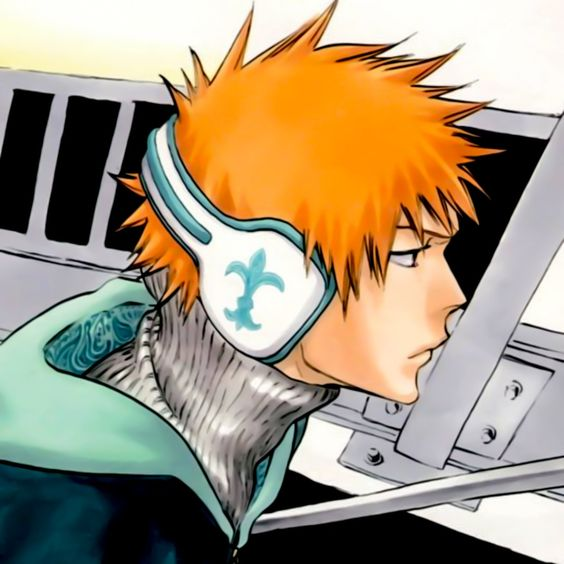
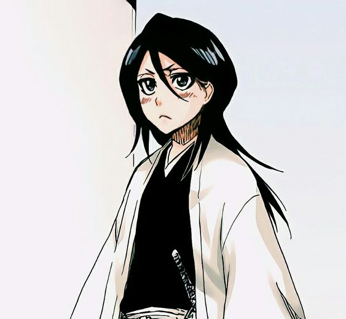
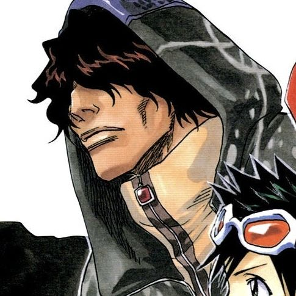
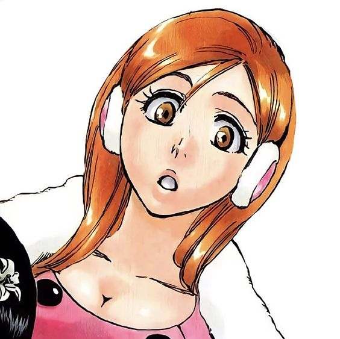
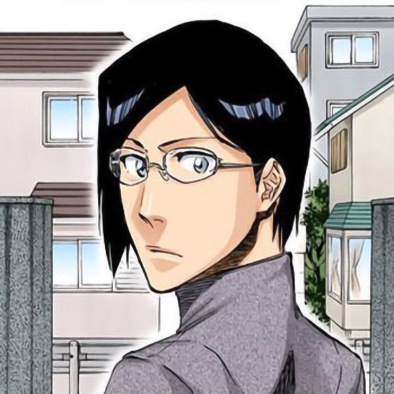

BLEACH

Synopis:
Ichigo Kurosaki, who is 15 years old, is not like other teenagers, since he has always had the gift of seeing ghosts and spirits. One day, Rukia Kuchiki, a female Shinigami (God of Death), approaches him while searching for an evil spirit. However, Ichigo absorbs the Shinigami's powers during the battle. The journey of Ichigo and Rukia to herd Hollows (fallen spirits) and battle other supernatural creatures begins here.
Ichigo Kurosaki
A once ordinary human, the son of both Shinigami and Quincy, who became a Substitute Shinigami. He has two younger siblings who he loves very much. He is the main protagonist, and he is known for his bright orange hair in and out of the BLEACH universe.
In the original dub, he is played by Masakazu Morita. In the English dub, he is played by Johnny Yong Bosch.
Rukia Kuchiki
Though she may be small and cute, she is one of the strongest Shinigami in the Soul Society (afterlife). Despite being dopted into the noble Kuchiki Clan, she stayed modest, reserved, and humble. She has an odd fixation on all things cute, specifically anything rabbit-themed, and can get sensitive when anyone comments on it.
In the original dub, she is played by Fumiko Orikasa. In the English dub, she is played by Michelle Ruff.
Yasutora Sado
Or, as Ichigo calls him, Chad, is a human with spiritual abilities, born of Mexican and Japanese descent. Chad is a fearless and quiet person, and the embodiment of the "gentle giant" trope. He was Ichigo's classmate in their high school days, and they were close friends.
In the original dub, he is played by Hiroku Yasumoto. In the English dub, he is played by 3 different voice actors; Marc Worden, Jamieson Price, and Alain Mesa.
Orihime Inoue
Orihime is also a human with spiritual abilities. Nearly all her life, she has lived alone after the death of her parents and brother. Because of that, she has grown to be an independent, and she is quite smart despite her naïve and clueless appearance.
In the original dub, she is played by Yuki Matsuoka. In the English dub, she is played by Stephanie Sheh.
Uryu Ishida
Uryu is a Quincy, which are humans with high spirtual abilities, he and his father were the last Quincies left on Earth. He is often quiet and solitary, yet tries his hardest to act calm and collected in front of others, and likes to look cool. Besides his spiritual abilities, he's highly skilled at sewing, and he is highly intelligent compared to his peers.
In the original dub, he is played by Noriaki Sugiyama. In the English dub, he is played by Derek Stephen Prince.